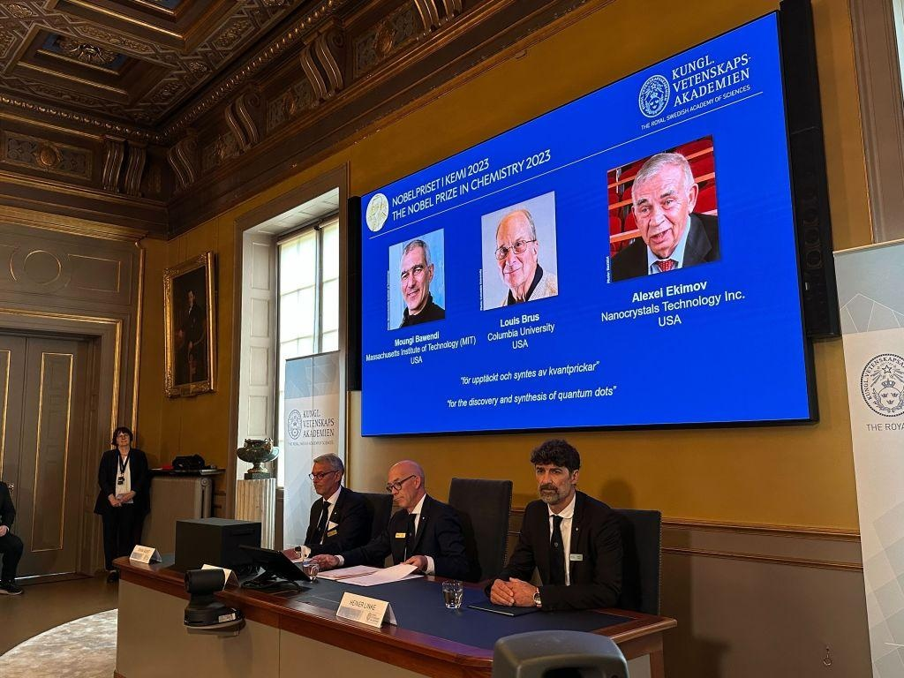

Swedish Academy Confirms Chemistry Nobel Winners After LeakThe laureates of this year’s Nobel Prize in chemistry have been officially announced, hours after their names were leaked in what appeared to be an inadvertently sent email. The winners, for achievements in the field of nanotechnology, are Moungi G. Bawendi from the Massachusetts Institute of Technology, Louis E. Brus from Columbia University and Alexei I. Ekimov formerly from research company Nanocrystals Technology Inc., according to the Royal Swedish Academy of Sciences. The three will share the 11 million-krona ($1 million) award, the academy said. BREAKING NEWS — The Nobel Prize (@NobelPrize) October 4, 2023 The Royal Swedish Academy of Sciences has decided to award the 2023 #NobelPrize in Chemistry to Moungi G. Bawendi, Louis E. Brus and Alexei I. Ekimov “for the discovery and synthesis of quantum dots.” pic.twitter.com/qJCXc72Dj8 The prize “rewards the discovery and development of quantum dots, nanoparticles so tiny that their size determines their properties,” the academy said on Wednesday. “These smallest components of nanotechnology now spread their light from televisions and LED lamps, and can also guide surgeons when they remove tumor tissue, among many other things.” Bawendi was born in France, Brus in Ohio, and Ekimov in the former Soviet Union. Their names came to light in an emailed message sent Wednesday morning, before the committee had even met to formally decide on the winners. A spokeswoman contacted by Bloomberg confirmed an email had been sent, and added that the academy had not at the time made a decision on the award. Officials plan to investigate what went down, she said. Secrecy around the most coveted prize in science is usually strictly upheld, though in 2018 local media reported that an inquiry found that a committee member had disclosed laureate names to her husband. The inquiry followed scandals that led to the pulling of the literature prize that year. Annual prizes for achievements in physics, chemistry, medicine, literature and peace were established in the will of Alfred Nobel, the Swedish inventor of dynamite, who died in 1896. A prize in economic sciences was added by Sweden’s central bank in 1968. The laureates are announced through Oct. 9 in Stockholm, with the exception of the peace prize, whose recipients are selected by the Norwegian Nobel Committee in Oslo. —With assistance from Anton Wilen. More Must-Reads From TIME - Why House Democrats Refused to Save McCarthy - The 100 Best Mystery and Thriller Books of All Time - Inside One Indian iPhone Factory - What Happens to Diane Feinstein's Senate Seat - Self-Silencing Is Making Women Sick : Essay - The Enduring Charm of John Grisham - Kerry Washington: The Story of My Abortion - Want Weekly Recs on What to Watch, Read, and More? Sign Up for Worth Your Time |
 |